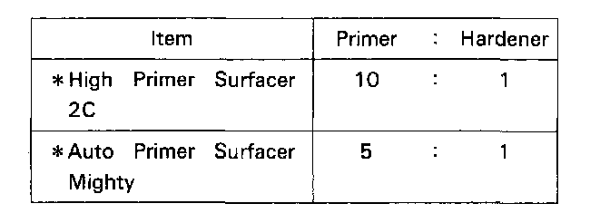
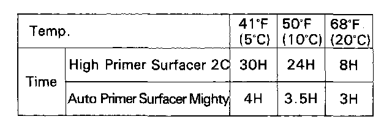
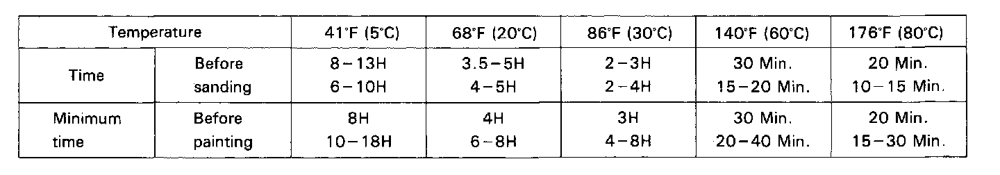

Soft Chipping Guard Primer Coat
Coating ProceduresNOTE: This section covers the application of the soft chipping primer to the replacement part.
1. Sanding the replacement part
WARNING: Wear goggles or safety glasses to prevent eye injury.
Sand the area to be painted with #240-#400 sandpaper.
NOTE:
- Do not oversand the edges or corners of the part.
- Do not expose bare metal.
2. Air blowing/degreasing
WARNING:
- Do not use high air pressure; use only an approved, 210 kPa (2.1 kgf/sq.cm, 30 psi) air nozzle.
- Wear goggles or safety glasses to prevent eye injury.
- Paint thinner is flammable. Store it in a safe place, and keep it away from sparks, flames or cigarettes.
Clean the surface with compressed air and wax and grease remover.
3. Masking
- Place masking tape or paper around the surface to be painted.
- Cover as wide an area as possible with tape or paper to keep primer from spreading.
4. Spraying chipping guard primer
- Stir the primer thoroughly.
- Put the primer in a beaker and weigh the needed amount of primer to be used.
- Mix the hardener into the primer, following the manufacturer's instructions.

NOTE: Measure the primer and hardener so they are in correct ratio.
- Add the specified thinner to the mixture of hardener and primer to attain the proper viscosity for spraying.
2C 68 degrees F (20 degrees C) sec ± 1
- These substances are not available in the U.S.A. Honda recommends using DuPont's 123 Vinyl Coating, or Sherwin-Williams' Vinyl Gravel Guard.Follow the manufacturer's instructions for application.

- Once mixed with the hardener and thinner, the primer must be used within the times shown.
WARNING:
- Most paints contain substances that are harmful if inhaled or swallowed. Read the paint label before opening the container. Spray paint only in a well ventilated area.
- Cover spilled paint with sand, or wipe it up at once.
- Wear an approved respirator, gloves, eye protection and appropriate clothing when painting. Avoid contact with skin.
- If paint gets in your mouth or on your skin, rinse or wash thoroughly with water. If paint gets in your eyes, flush with water and get prompt medical attention.
- Paint is flammable. Store it in a safe place, and keep it away from sparks, flames or cigarettes.
- Fill the gun's paint cup with the primer. Use a strainer when pouring the primer into the cup.
- Primer should never be applied to a dirty or greasy surface. Before spraying, blow dust and dirt off the surface and clean with wax and grease remover.
(Method of spraying)
- Do not try to cover the surface with one heavy coat. Apply several thin coats.
NOTE:
- Spray coat 4-5 coats to get 20 microns of thickness, as one coat deposits 5-7 microns.
- Spray the primer at 250-300 kPa (2.5-3.0 kgf/ sq.cm, 35.6-42.7 psi) pressure. Spraying with improper air pressure will cause imperfections.
- Open the gun 3-4 turns.
- Wipe up unwanted primer immediately with thinner.
5. Cleaning spray gun
- After spraying, be sure to clean the spray gun thoroughly with thinner or solvent.
- The gun will be permanently clogged if the primer is allowed to dry.
6. Drying
- After spraying the chipping guard primer, air-dry for 7 - 10 minutes to evaporate the thinner in the primer. Then dry it with infrared lamps at 176 degrees F (80 degrees C) for 30-40 minutes.
NOTE: Insufficient baking may cause pinholes if the primer coat is too thick.

- The temperature lamps and drying time recommendations should be followed closely.
7. Intermediate and Top coating
- Sand the chipping guard primer film with #280- #400 sandpaper.
- Follow the intermediate/top coating procedures.
NOTE: The upper line of time shows specifications for High Primer Surfacer 2C, and the lower line Auto Primer Surfacer Mighty.